by Alan Parker
CRC Press, CRC Press LLC
ISBN: 0849371716 Pub Date: 08/01/93
|
|
Algorithms and Data Structures in C++
by Alan Parker CRC Press, CRC Press LLC ISBN: 0849371716 Pub Date: 08/01/93 |
| Previous | Table of Contents | Next |
A full crossbar topology provides connections between any two processors. This is the most complex connection topology and requires (n (n - 1) / 2 connections. A full crossbar is shown in Figure 2.15.
In the graphical representation the crossbar has the set, V, and E with
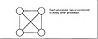
Figure 2.15 Full Crossbar Topology
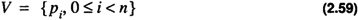
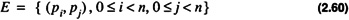
Because of the large number of edges the topology is impractical in design for large n.
A rectangular mesh topology is illustrated in Figure 2.16. From an implementation aspect the topology is easily scalable. The degree of each node in a rectangular mesh is at most four. A processor on the interior of the mesh has neighbors to the north, east, south, and west. There are several ways to implement the exterior nodes if it is desired to maintain that all nodes have the same degree. For an example of the external edge connection see Problem 2.5.
A hypercube topology is shown in Figure 2.17. If the number of nodes, n, in the hypercube satisfies n = 2d then the degree of each node is d or log (n). As a result, as n becomes large the number of edges of each node increases. The magnitude of the increase is clearly more manageable than that of the full crossbar but it can still be a significant problem with hypercube architectures containing 64K nodes. As a result the cube-connected cycles, described in the next section, becomes more attractive due to its fixed degree.
The vertices of an n dimensional hypercube are readily described by the binary ordered pair
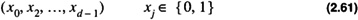
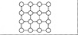
Figure 2.16 Rectangular Mesh
With this description two nodes are neighbors if they differ in their representation in one location only. For example for an 8 node hypercube with nodes enumerated
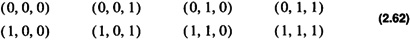
processor (0, 1, 0) has three neighbors:
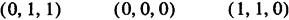
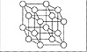
Figure 2.17 Hypercube Topology
A cube-connected cycles topology is shown in Figure 2.18. This topology is easily formed from the hypercube topology by replacing each hypercube node with a cycle of nodes. As a result, the new topology has nodes, each of which, has degree 3. This has the look and feel of a hypercube yet without the high degree. The cube-connected cycles topology has nlog n nodes.
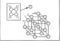
Figure 2.18 Cube-Connected Cycles
This section presents algorithms and issues related to the hypercube topology. The hypercube is important due to its flexibility to efficiently simulate topologies of a similar size.
Processors in a hypercube are numbered 0, ..., n - 1. The dimension, d, of a hypercube, is given as
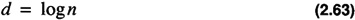
where at this point it is assumed that n is a power of 2. A processor, x, in a hypercube has a representation of
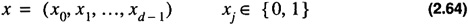
For a simple example of the enumeration scheme see Section 2.5.3.3 on page 75. The distance, d (x, y), between two nodes x and y in a hypercube is given as
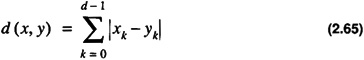
The distance between two nodes is the length of the shortest path connecting the nodes. Two processors, x and y are neighbors if d (x, y) = 1. The hypercubes of dimension two and three are shown in Figure 2.19.
A common requirement of a parallel processing topology is the ability to support broadcast and message passing algorithms between processors. A broadcast operation is an operation which supports a single processor communicating information to all other processors. A message passing algorithm supports a single message transfer from one processor to the next. In all cases the messages are required to traverse the edges of the topology.
To illustrate message passing consider the case of determining the path to send a message from processor 0 to processor 7 in a 3-dimensional hypercube as shown in Figure 2.19. If the message is to traverse a path which is of minimal length, that is d (0, 7), then it should travel over three edges. For this case there are six possible paths:
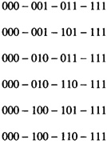
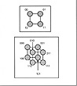
Figure 2.19 Hypercube Architecture
In general, in a hypercube of dimension d, a message travelling from processor x to processor y has d (x, y) ! distinct paths (see Problem 2.11). One simple algorithm is to compute the exclusive-or of the source and destination processors and traverse the edge corresponding to complementing the first bit that is set. This is illustrated in Table 2.4 for left to right complementing and in Table 2.5 for right to left complementing.
| Processor Source | ProcessorDestination | Exclusive-Or | Next Processor |
|---|---|---|---|
| 000 | 111 | 111 | 100 |
| 100 | 111 | 011 | 110 |
| 110 | 111 | 001 | 111 |
| Processor Source | Processor Destination | Exclusive-Or | Next Processor |
|---|---|---|---|
| 000 | 111 | 111 | 001 |
| 001 | 111 | 110 | 011 |
| 011 | 111 | 100 | 111 |
The message passing algorithm still works under certain circumstances even when the hypercube has nodes that are faulty. This is discussed in the next section.
This section presents the analysis of the class of hypercubes for which the message passing routines of the previous section are valid. Examples are presented in detail for an 8-node hypercube.
Definition 2.23
The adjacency matrix, A, of a graph, G, is the matrix with elements aij such that aij = 1 implies there is an edge from i to j. If there is no edge then aij = 0.
The adjacency matrix, A, of the transitive closure of the 8-node hypercube is simply the matrix
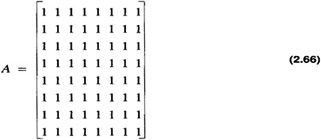
For a hypercube with all functional nodes every processor is reachable.
| Previous | Table of Contents | Next |
){kind=link}
){kind=link}
){kind=link}
){kind=link}
){kind=link}